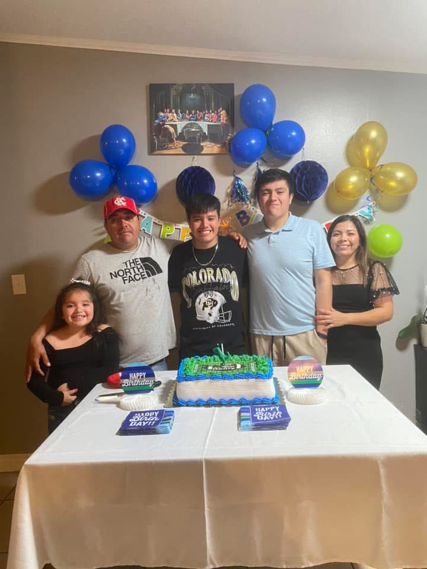
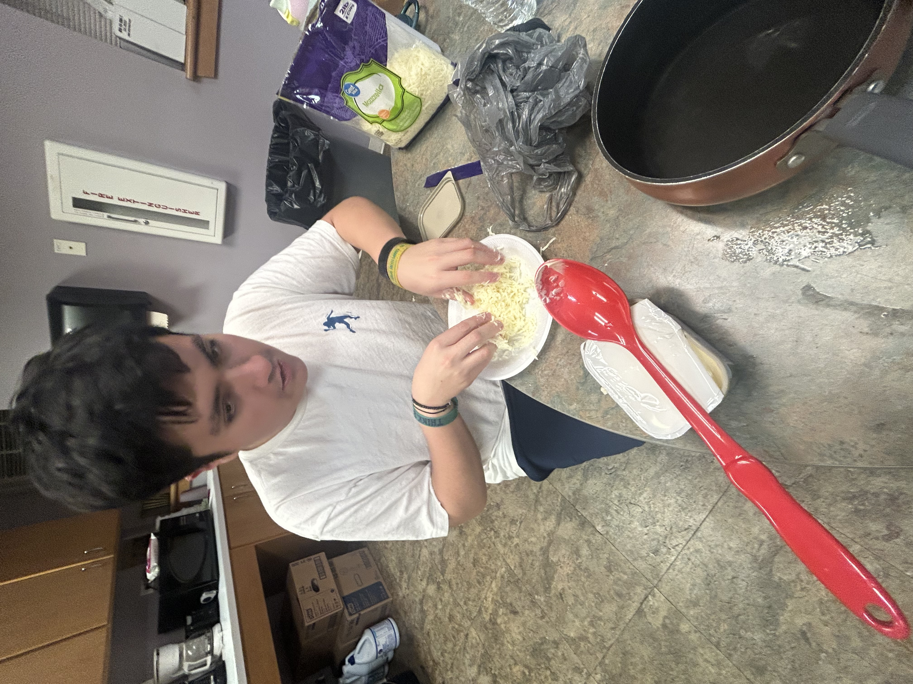
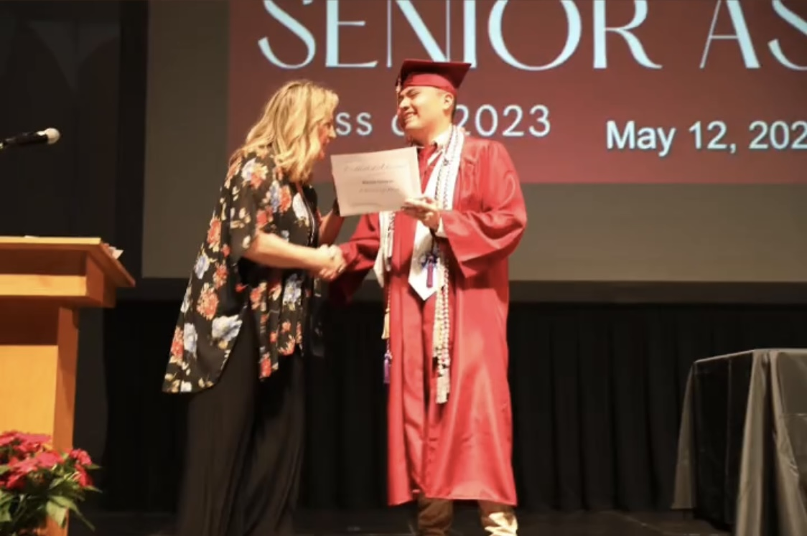
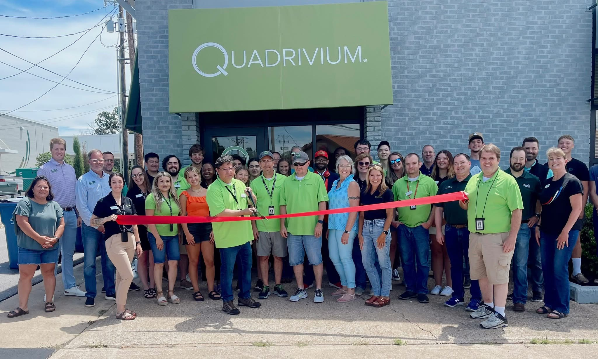
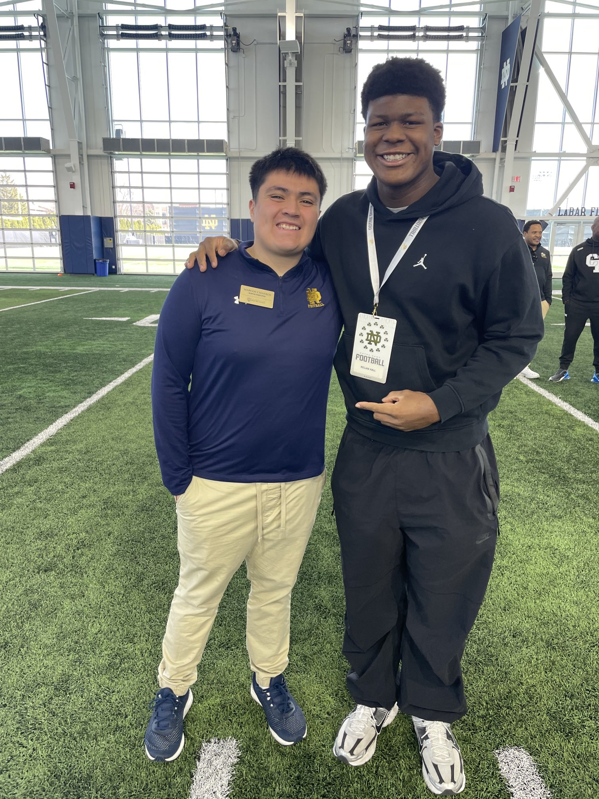
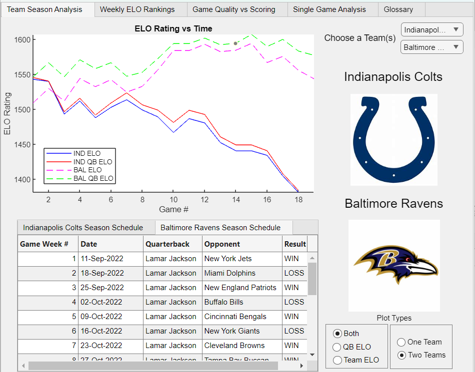
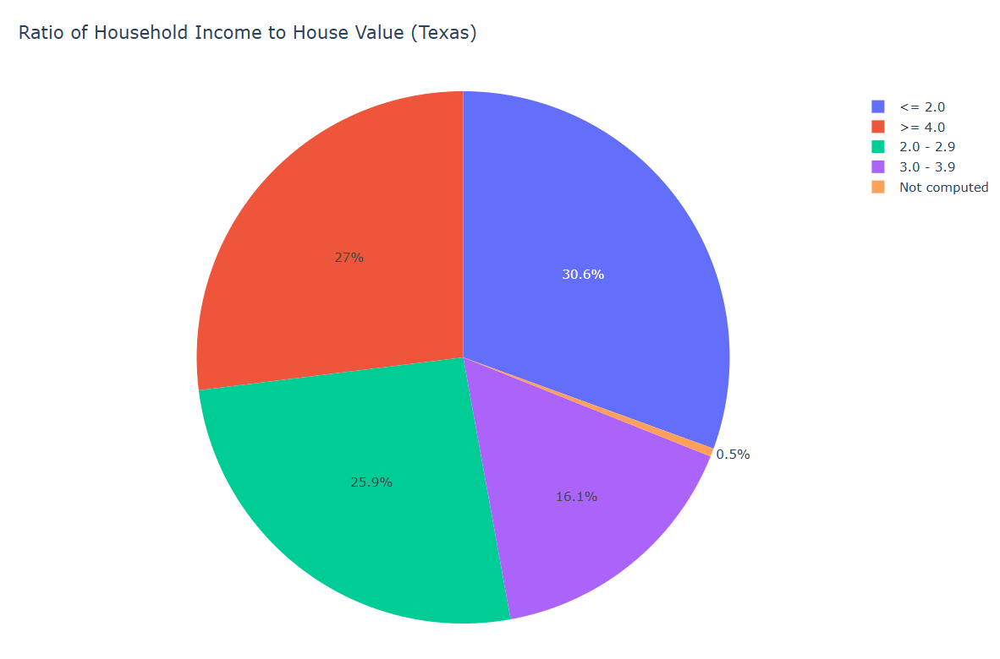

Hi! My name is Marcos Cisneros and I am currently an undergraduate student at the University of Notre Dame. I come from my hometown Springdale (aka "The Dale"), Arkansas. I have two siblings: my brother Henry and my sister Steffi. I am the oldest out of them, which sets me to be the role model for them. I also have my parents, who originally lived in El Salvador and migrated to the U.S in the early 2000s. I have a labrador retriever named Dobrik, who is 3 years old. As a first-generation student, I strive to enter the CS job industry in order to give back to my parents for the opportunites they have provided me here in the United States.


In terms of discernment and my career, I have interests in working in the Computer Science. Although I am currently a Computer Science student, I am currently exploring the Computer Engineering field and am considering switiching discernments. I grew up from a low-income household, where the only device we were able to afford was an HP laptop. Lucky for me, I was the "tech-geek" of the household and would troubleshoot any problems the laptop had, which sparked my interest in computers and hardware. In addition, I also am interested in working in the sports industry, especially with American football teams. During middle school, I started watching NFL and all my freetime was devoted towards playing football with my school and watching football highlights. To this day, I still am curious about the sport and continue to learn more about it not just about its logistics, but also about the data and analysis behind it. Outside of my discernment, I have other interests, with one of them being video games. I've loved playing video games, especially sport-related ones. With the release of NCAA College Football 2025, my life has almost felt "satisfied" since then. I also rock with 2K basketball games, MLB the Show, and FIFA. I also play other games such as the Dark Souls series and Roblox. I also like to get involved in physical activity. Running has been something I recenlty got into that I've enjoyed. I also have done some weightlifiting and sports on the side such as football, soccer, and basketball.
I received my secondary education from Springdale High School, a public high school located in Springdale, AR. Coming out of high school, I had a 4.4 gpa and was the school's valedictorian. In terms of seeking university studies, I applied through Questbridge, a non-profit organization that seeks to help students connect with their partnered colleges and universities. Through the process, I explained my background, needs, and story behind by life at the time, which would lead me into being a finalist for the application. I was able to match with the University of Notre Dame for a full-ride scholarship as a first-generation student. At the University of Notre Dame, I am currently Sophomore studying Computer Science. These are the courses I've taken related to my degree:


Within my experience, the first internship I had was with Quadrivium Inc. Quadrivium is a computer security service that offers IT management, projection with data, and cyber security. Within this internship, I learned about virtual machines, how to access them, and completed tasks on them. I also learned about several peripheral devices and the hardware of a computer throughout the internship. I also received opportunities to shadow some of the technicians within their on-site tasks, which included setting up WAPs and servers. In addition to the internship itself, I was assigned a co-worker to mentor me, which involved consistent meetings about my growth within the internship and feedback my experience at the time. From this internship, I was able to grow in communication and problem solving thanks to the tasks I was assigned. In terms of technical skills, I learned about virtual machines, hardware, and cybersecurity practices.
Prior to my freshman year at Notre Dame, I received an internship offer for recruiting with Notre Dame's football team. As an intern, I worked office shifts throughout the week and weekend events. Within office shifts, I was asked to complete tasks centered around our recruits. Such tasks include completing profiles on recruits for coaches and staff to look over, handle data from databases into Google Spreadsheets, and preparation for weekend events (credentials for recruits, food and snacks, golfcart maintenance, etc). On the weekends, several events would occur such as football games and spring practices. I would be assigned a role for our recruting event prior to the game. Such roles include hostess for a recruit's family and a runner (available for quick tasks at any moment). Such tasks in these cleaning and setting up recruiting events and guiding recruits and their families through their visit. From this internship, I have grown a lot in communication with my co-workers and staff. I also have been able to get out of my comfort zone and talk to recruits more comfortably. In terms of technical skills, I have learned more about Google Docs, Google Spreadsheets, and data management. I also have gained more knowledge and experience within college football and the sports industry overall.


